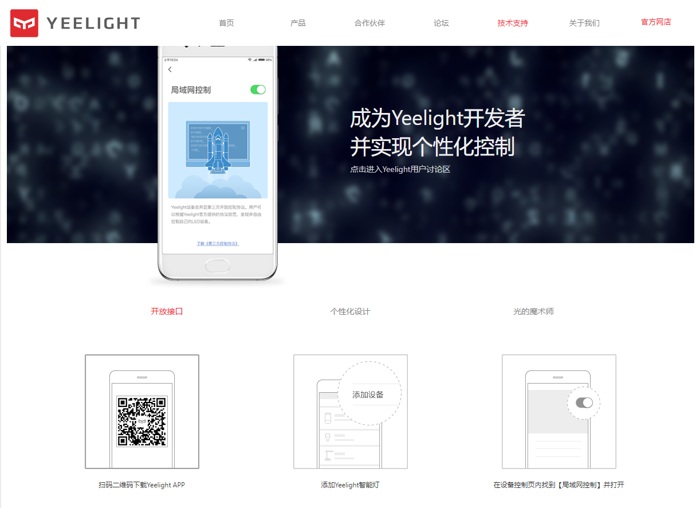
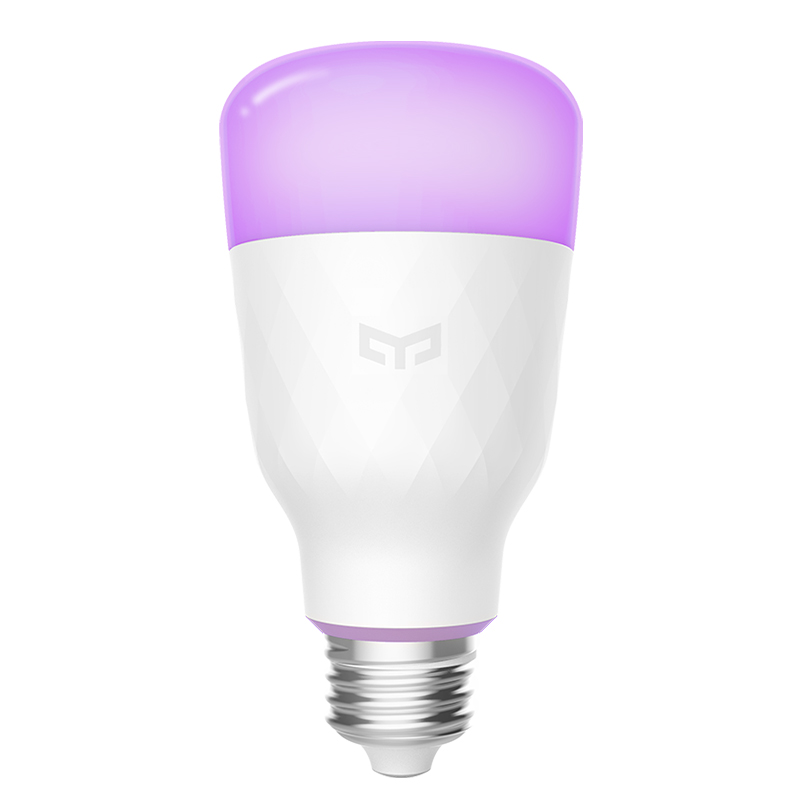
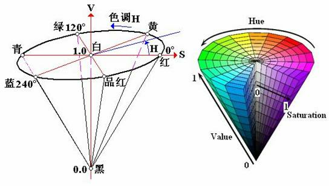
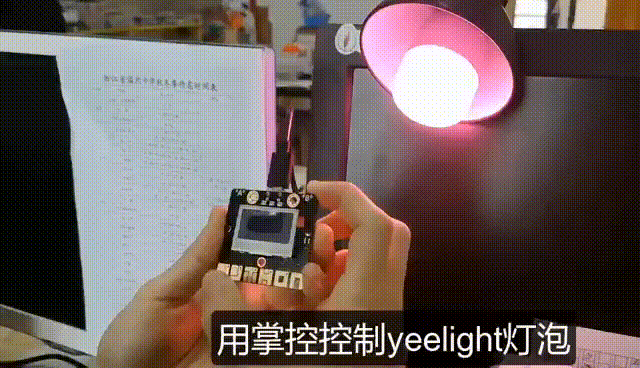

Yeelight
Yeelight 拥有完整的智能家居照明产品线，产品系列辐射家居照明系列、台上照明系列、氛围照明系列以及智能控制系列。集前沿技术和至美设计于一体是Yeelight一贯的追求。 AI技术、BLE MESH技术、全屋智能照明技术均旗下产品进行广泛应用，全线WiFi产品支持智能语音控制，灯光变化，尽在言语之间。
局域网控制
Yeelight 支持Google Assistant 和 Amazon Alexa 智能语音控制。还支持国内少有支持的IFTTT。它可以社交媒体、智能硬件等各类网络服务更好的联动。后续我们会讲解IFTTT的有关应用。 除此外,Yeelight还针对技术爱好者推出,第三方控制协议,可实现局域网内的个性化的控制。本文讲解的掌控板控制Yeelight智能照明设备就是用到该协议。
Yeelight第三方控制协议：https://www.yeelight.com/download/Yeelight_Inter-Operation_Spec.pdf

Yeelight局域网控制
准备
首先我们要有个Yeelight智能照明设备,按Yeelight官方声明,市面上在售的所有WiFi照明设备以及后续推出的WiFi产品都会支持局域网控制协议。本人较为推荐Yeelight LED灯泡(彩光版),即经济实惠又能控制颜色。
{kind=link}

Yeelight LED灯泡(彩光版)
YeeLight智能灯泡在使用前，须使用YeeLight APP先配置连接好wifi，并将 “局域网控制” 功能打开。
{kind=link}
Yeelight配置过程
掌控板提供
yeelight驱动库,该库可在 awesome-mpython/libary/yeelight 获取。里面有更详细的yeelight模块的API说明。yeelight.py下载至掌控板的文件系统。掌控板连接到Yeelight相同的局域网内。
编程
发现灯泡
掌控板和Yeelight灯泡在同局域网内后,我们要控制灯泡,首先需要知道该灯泡的IP地址,我们可以使用 discover_bulbs() 函数:
from mpython import * # 导入mpython模块
from yeelight import * # 导入yeelight模块
my_wifi = wifi() # 连接到与YeeLight相同的局域网内
my_wifi.connectWiFi("ssid","password")
discover_bulbs() # 发现局域网内YeeLight的设备信息
网内的Yeelight灯泡响应并返回包含bulbs属性的字典:
>>> discover_bulbs()
[{'ip': '192.168.0.8', 'capabilities': {'rgb': '16711680', 'bright': '100', 'support': 'get_prop set_default set_power toggle set_bright start_cf stop_cf set_scene cron_add cron_get cron_del set_ct_abx set_rgb set_hsv set_adjust adjust_bright adjust_ct adjust_color set_music set', 'sat': '100', 'power': 'off', 'id': '0x0000000007e7544d', 'name': '', 'fw_ver': '26', 'color_mode': '2', 'hue': '359', 'ct': '3500', 'model': 'color'}, 'port': '55443'}]
discover_bulbs() 函数,可获取网内Yeelight设备的属性。从上述返回的来看,该灯泡的IP地址为 192.168.0.8 。
开关控制
知道IP地址后,我们构建 Bulb 对象,对灯泡开关控制:
bulb=Bulb("192.168.0.8") # 构建对象
bulb.turn_on() # 开灯指令
bulb.turn_off() # 关灯指令
除了 turn_on() 、turn_off() 还可使用 toggle() 反转状态。
亮度调节
bulb.set_brightness(100)
set_brightness(brightness) , brightness 参数为亮度值,可调范围0~100 。
设置颜色
bulb.set_rgb(255,0,0) # 通过RGB设置灯泡颜色
bulb.set_hsv(180,100) # 通过HSV设置灯泡颜色
bulb.set_color_temp(1700) # 设置灯泡色温
yeelight 模块提供 set_rgb(red, green, blue) 和 set_hsv(hue, saturation) 两个函数。”RGB” 和”HSV” 两种颜色模型来设置灯泡灯光颜色。RGB颜色模型比较常用,相信大家并不陌生。通过对红(R)、绿(G)、蓝(B)三个颜色通道的变化以及它们相互之间的叠加来得到各式各样的颜色。
HSV（Hue Saturation Value）颜色模型：hue 色调,用角度度量，取值范围为0～359，从红色开始按逆时针方向计算，红色为0°，绿色为120°,蓝色为240°。saturation 饱和度,表示颜色接近光谱色的程度。颜色的饱和度也就愈高。饱和度高，颜色则深而艳。范围0~100。
Value亮度参数,未提供支持。只需设置 hue 、saturation 参数即可。在做些彩虹效果,颜色过渡时,HSV更为自然。
还可以使用 set_color_temp(degrees) 函数设置灯泡色温, degrees 色温参数,范围1700~6500。
{kind=link}

Yeelight HSV颜色模型
{kind=link}

掌控板控制Yeelight
注意
Yeelight,目前WiFi智能设备最多支持4个同时TCP连接。连接尝试将被拒绝。对于每个连接，都有一个命令消息配额限制， 也就是每分钟60个指令。所有LAN也有一个总配额限制,144。